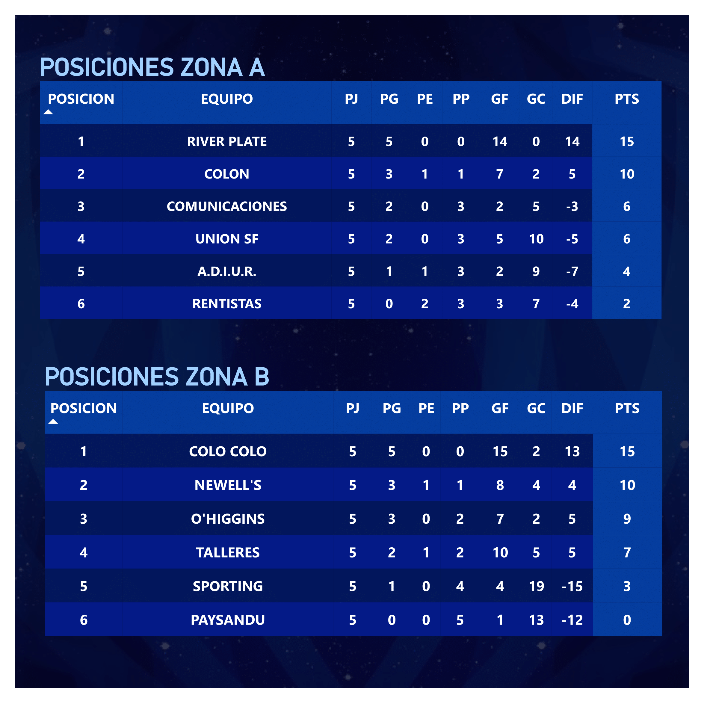

MANTENER INFORMADO
Al finalizar cada jornada, era esencial que los equipos conocieran su posición para prepararse adecuadamente para el próximo partido. El procesamiento semi-automático de los datos permitió obtener esta información de manera inmediata, que luego se compartía en redes sociales para mantener a todas las delegaciones actualizadas.

INFORMES DE DESEMPEÑO
Para maximizar el valor de la información recolectada, se generaron informes personalizados que resumían el desempeño de cada delegación al finalizar el torneo. Estos informes, enfocados principalmente en los 'goles' debido a la naturaleza de los datos, se enviaron a cada delegación para proporcionar una visión detallada de su rendimiento.